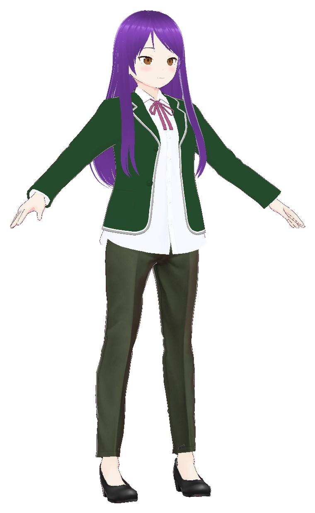

Créé via le pontProjet 01 · 2026
VRoid MCP Bridge
Un pont MCP local qui permet à Claude Code, Claude Desktop, DeepSeek ou tout client MCP de piloter VRoid Studio : 34 outils pour les paramètres, textures, cheveux, presets, caméra et captures. Chaque modification passe par l’historique de VRoid, donc Ctrl+Z fonctionne.
Développé avec Claude Code · Test du personnage et site réalisés avec DeepSeek.